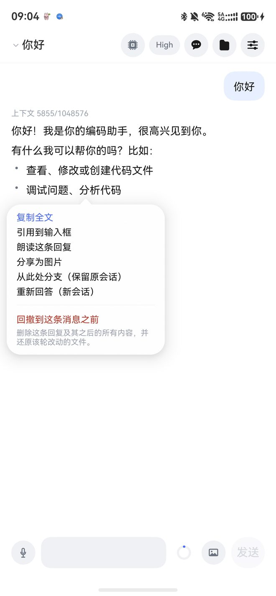
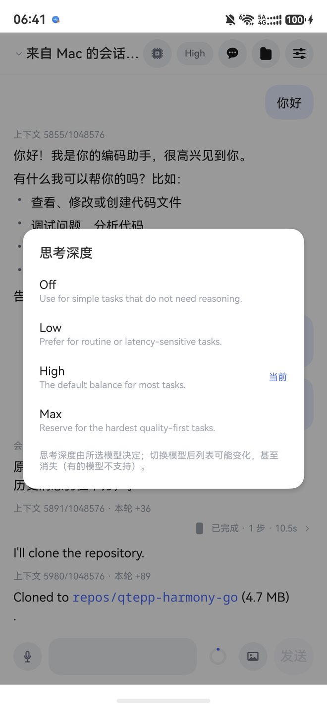
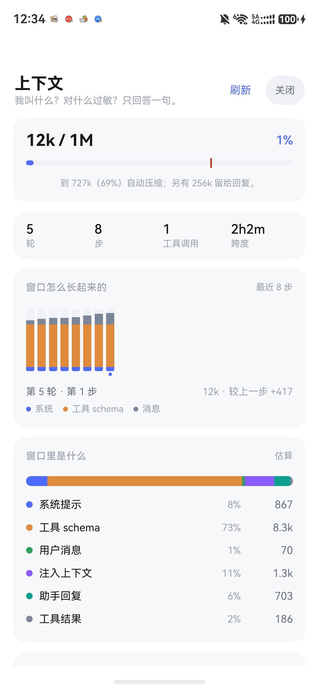
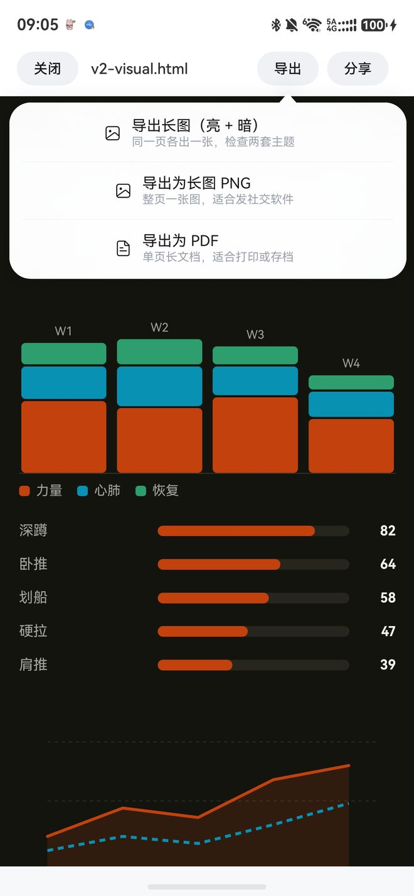
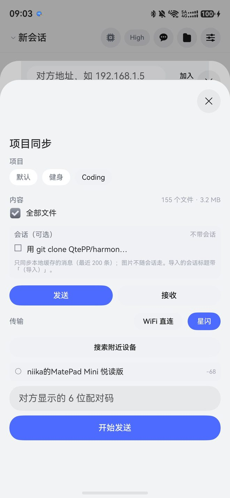
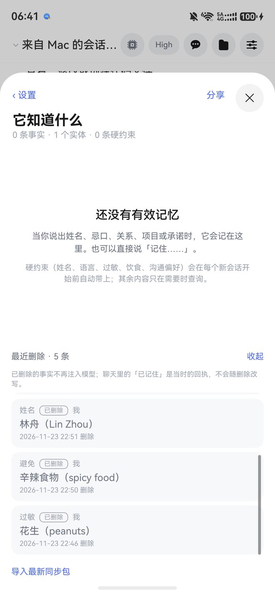

鸿蒙不是 Personal Agent 的孤岛。
HarmonyGo 把完整的 dsh agent 运行时（Node v24.2.0 + 676 个依赖）装进 HarmonyOS 应用进程 —— 手机、平板、2in1 不连电脑就能跑 agent；记忆（端侧本体）、文档（Office / HTML 产物）、 代码（纯 JS git）、计算（实验性 Python + 内置 pybot）、设备间同步（WiFi / 星闪） 也都在设备本地完成，不经过云端会话。
三件事说清楚它
运行时、记忆、协作面 —— 每一层都落到真机可验证的能力上。
运行时：同进程内嵌 Node 与 dsh
用纯 JS 垫片绕开鸿蒙「禁 fork/exec、--jitless 无 WASM」的宿主限制，
让设备第一次能原生承载现代 agent 运行时。模型 API 仍联网，agent 在设备本地运行。
记忆：端侧 SQLite 个人本体
身份、过敏、沟通偏好等「硬约束」跨会话自动注入，其余按需查询； 带现实生效时间（valid_from），可查看、删除、分享，可导出 bundle 并对端合并。
协作面与工具
项目文件、会话、本体 bundle 经 WiFi 或星闪在两台设备间同步； 产物是原生 HTML / Office 文件，可导出长图 / PDF 再分享； 另有纯 JS git（clone / commit / push）与实验性 Python（Pyodide + pybot）。
真机长这样
截图全部来自真机（手机 CMM-AL10），不是模拟器或设计稿。






诚实的状态
对外承诺前先对照这张表；完整清单在仓库 docs/POSITIONING.md。
已验证（真机）verified
- 同进程 Node + dsh（ACP 9 方法）
- HTML 产物导出：长图 / PDF / 亮暗双图 + 分享
- Office docx/xlsx 生成与 App 内原生预览
- 端侧本体、跨设备 bundle 同步
- 项目同步：TCP 与星闪两条传输
- 纯 JS git：clone / commit / push
实验（非产品能力）experimental
- 端侧 Python（Pyodide，默认关闭）
- 内置 pybot 小模型
- 本机窄意图 gate（问候/时间/算术）
边界与不做limits
- 鸿蒙 PC（2in1）已声明、待真机验收
- Codex CLI 是 Rust 二进制，不能直接运行
- 无 fork/exec、无原生 .node、无 WASM（Node 侧）
- 本体无静态加密；OWL 只导出不推理